CIFAR-100
Emphasize matching mainly q: the content coordinate remains the cleanest readout while p stays more auxiliary.
JEPAs usually target an isotropic latent cloud; HamJEPA instead predicts between views with a symplectic map on phase space.
Geometric ML
Downloadable summary PDF: open PDF.
A common JEPA instinct is to regularize toward an isotropic Gaussian because isotropy appears generic. Isotropic regularization already imposes the ambient Euclidean metric as the symmetry reference. If downstream tasks have structure, that reference frame can be wrong.
The formal setup introduces a structured SPD operator \(H\succ0\), downstream task family
\[ y=w^\top \tilde{z}, \qquad \mathcal W_H=\{w:w^\top H^{-1}w\le 1\}, \]
and an \(H\)-energy budget
\[ \operatorname{tr}(H\Sigma)=c, \qquad \Sigma=\operatorname{Cov}(\tilde{z}). \]
Under this geometry, the unique minimax covariance is
\[ \Sigma^\star=\frac{c}{d}H^{-1}, \]
and the unique maximum-entropy law under the same budget is
\[ \tilde{z}\sim \mathcal{N}\!\left(0,\frac{c}{d}H^{-1}\right). \]
So the canonical object is anisotropic in ambient coordinates and isotropic only after whitening by \(H^{1/2}\).
If Euclidean isotropy is imposed anyway, the feasible isotropic covariance under the same budget is
\[ \Sigma_{\mathrm{iso}}=\frac{c}{\operatorname{tr}(H)}I, \]
and the worst-case variance ratio becomes
\[ \rho(H)=\frac{V(\Sigma_{\mathrm{iso}})}{V(\Sigma^\star)} =\frac{d\,\lambda_{\max}(H)}{\operatorname{tr}(H)}, \qquad 1\le \rho(H)\le d. \]
The price of isotropy is that isotropic regularization is only metric-consistent when \(H\propto I\).
A phase-space bridge is then introduced via
\[ \mathcal H_H(q,p)=\tfrac12 q^\top Hq+\tfrac12\|p\|_2^2, \qquad \pi_H(q,p)\propto \exp\!\Bigl(-\frac{d}{c}\mathcal H_H(q,p)\Bigr), \]
whose \(q\)-marginal is \(\mathcal N(0,(c/d)H^{-1})\) and whose \(p\)-marginal is \(\mathcal N(0,(c/d)I)\).
Because the relevant \(H\) is unknown in practice, HamJEPA does not hard-code a structured encoder marginal. It places Hamiltonian structure in the predictor. Each view is encoded as a phase-space state \(s=(q,p)\), with \(q\) as content coordinate and \(p\) as momentum-like auxiliary state. Cross-view prediction is performed by a \(K\)-step leapfrog rollout of
\[ \mathcal H_\phi(q,p)=\tfrac12\|p\|_2^2+V_\phi(q). \]
The predictor map \(\hat s_b=\Phi_\phi^K(s_a)\) is symplectic, volume-preserving, and reversible under time-step sign reversal. The key claim is not literal physical dynamics in the encoder; it is that the view-to-view map is no longer an arbitrary geometry-destroying regressor.
Symplectic structure alone does not guarantee non-collapse at the encoder output. A symplectic predictor cannot locally crush phase-space volume, but the encoder could still produce a degenerate state cloud. HamJEPA therefore adds encoder-side non-collapse terms: fixed-unit energy budgets for \(q\) and \(p\), a projected log-determinant floor, and a participation-ratio floor. These controls are intentionally weaker and more geometry-aware than forcing \(\Sigma\propto I\): they preserve scale and rank without declaring all directions equivalent.
The comparisons are controlled. Across methods, the JEPA backbone, augmentations, optimizer, batch size, and training schedule are held fixed. Both datasets use a headless token regime based on ResNet stage-3 features, and the projector is identity so the \(q/p\) split is not remixed by an MLP head. The intended interpretation is geometric: the observed gains are not explained by changing the surrounding recipe.
At CIFAR-100 30 epochs, \(q\) is the strongest HamJEPA readout for kNN while \((q,p)\) gives the best linear probe. The interpretation is that \(q\) carries cleaner metric-consistent neighborhood structure, while \(p\) contributes complementary linearly decodable signal. On ImageNet-100, where the stable pretraining regime uses full \((q,p)\) state, HamJEPA \(q\), \(p\), and \((q,p)\) are all strong and close; for SIGReg, concatenated \((q,p)\) remains better than either half. This indicates complementarity for SIGReg versus greater redundancy and individual informativeness for HamJEPA.
The short-budget numbers are already decisive. On CIFAR-100 at 30 epochs, HamJEPA-\(q\) moves kNN@20 from \(26.56\pm0.18\) to \(31.45\pm0.27\) and linear probe from \(30.43\pm0.30\) to \(33.95\pm0.24\), with \((q,p)\) reaching best linear probe at \(34.18\pm0.17\). On ImageNet-100 at 45 epochs, HamJEPA improves all reported readouts over SIGReg; the strict 1024-D comparison \(q\) vs \(q\) gives \(+4.82\) at kNN@20 and \(+7.52\) in linear probe. Even the 2048-D comparison is favorable: SIGReg \((q,p)\) at \(20.94 / 25.54\) versus HamJEPA \((q,p)\) at \(24.64 / 32.04\).
The geometry diagnostics support this reading. On CIFAR-100 at 30 epochs, HamJEPA-\(q\) raises the top-256 effective-rank proxy from about \(109.7\) (SIGReg) to about \(125.6\), while HamJEPA-\(p\) is more concentrated around \(79.5\). On ImageNet-100, SIGReg-\(q/p\) are around effective rank \(38\)-\(39\), whereas HamJEPA-\(q/p\) are around \(95\)-\(98\). The gains co-move with broader mean-centered covariance rather than low-rank collapse.
The appendix ablation isolates mechanism: replacing only the symplectic leapfrog predictor with a non-symplectic residual MLP leaves linear probe much improved over SIGReg but barely lifts neighborhood quality. MLP-HJEPA peaks around \(28.30\) kNN@20, while symplectic HamJEPA reaches \(34.43\). This is direct evidence that symplectic rollout is not decorative. Phase-space parameterization plus non-isotropic spectral control explain much of linear-probe lift; the large jump in local semantic geometry is attributed to the symplectic predictor itself.
HamJEPA has three moving parts: the encoder splits features into q,p, the predictor transports the state with a Hamiltonian rollout, and encoder-side regularizers keep the state cloud from collapsing.
Two views are encoded to phase-space states, one state is evolved by a symplectic predictor, and the predicted target is matched while encoder-side anti-collapse controls remain active.
The split is implemented at token level: the channel stack for each token is partitioned into q and p halves before flattening, so s=[q;p] is a construction choice with the split preserved by an identity projector.
The predictor uses a Hamiltonian rollout $H_\phi(q,p)=T(p)+V_\phi(q)$ with half-kick, drift, and half-kick updates repeated for K steps. The mapping is structured transport, not free-form regression.
Symplectic transport allows deformations but constrains local volume behavior, separating geometric transport from unconstrained collapse.
Symplecticity constrains the predictor, but it does not by itself prevent encoder collapse. A collapsed encoder could still map many different views to almost the same latent state, and a perfectly symplectic predictor would then only move around an already-degenerate state cloud.
The regularizers act on scale, variance, projected volume, spectrum, and batch mean.
Matching/readout choices are dataset-regime dependent. These choices are explained so that q, p, and (q,p) comparisons are interpretable.
Emphasize matching mainly q: the content coordinate remains the cleanest readout while p stays more auxiliary.
Match the full [q;p] state: both coordinates are directly constrained and p becomes more informative.
The diagrams move from phase-space encoding to symplectic prediction, then to the regularizers that keep the encoder output non-degenerate.
Epoch ImageNet-100 training-readout figures.
SIGReg+tokens
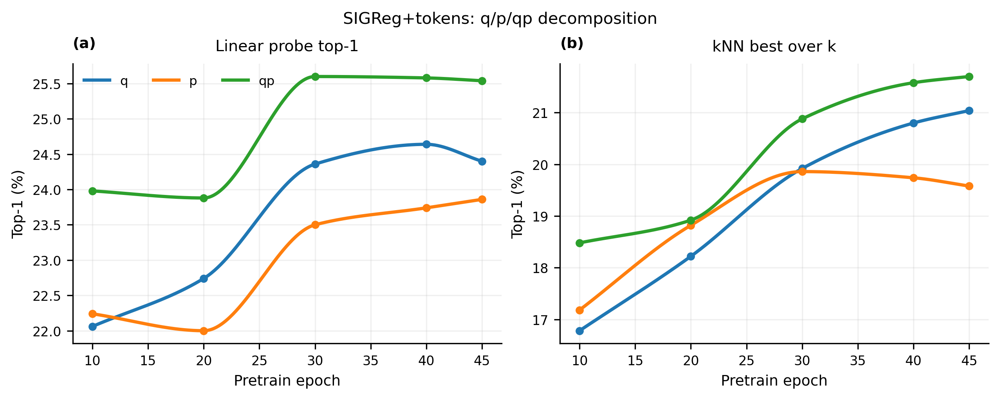
HamJEPA
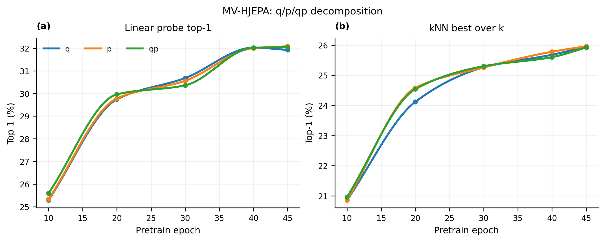
ImageNet-100 training dynamics
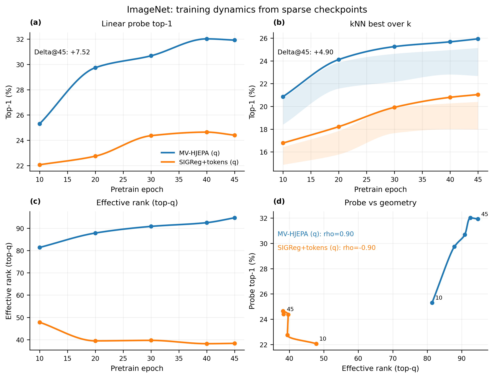
We compare rollouts by energy drift, reversibility, area preservation, symplecticity defect, and ensemble stability. Non-symplectic rollouts distort orbit structure and accumulate directional energy bias, while symplectic rollouts preserve qualitative orbit geometry with bounded oscillatory error consistent with modified-Hamiltonian intuition from backward error analysis.
Phase-plane drift
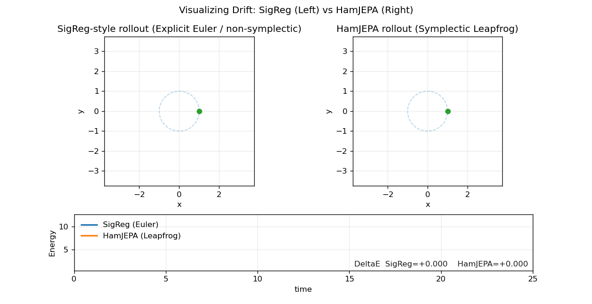
Energy surface view
Drift is evaluated over initial states (q0, p0) using stabilized relative energy error ΔH/(H0+ε). The sym-log visualization separates near-zero residual structure from broad systematic bias; leapfrog remains balanced and bounded while Euler exhibits coherent directional accumulation.
Nonlinear pendulum drift
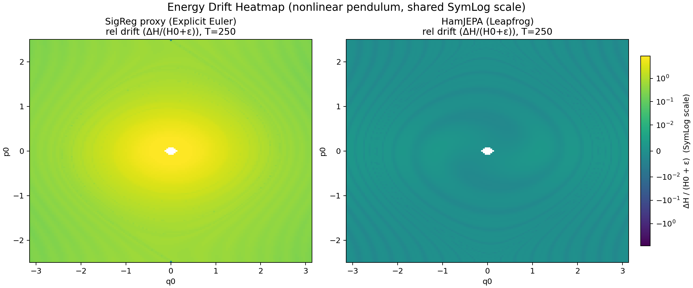
Alternate drift view
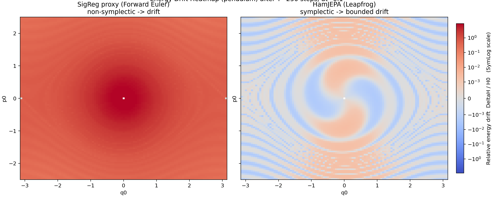
Reversibility is tested by comparing a forward rollout and the reflected reverse map R(q,p)=(q,-p). Leapfrog is self-adjoint and therefore supports forward-reverse consistency; Euler is not. This diagnostic tests structural integrity, not only pointwise prediction accuracy.
Forward-reverse defect map
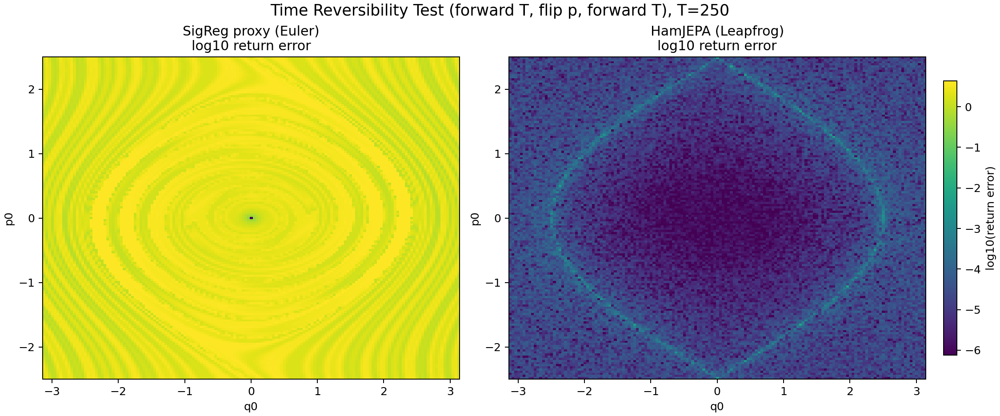
Hamiltonian flow preserves phase-space volume; in two dimensions this is area preservation. The grid-area trajectory is the quantitative diagnostic, while hull-area overlays provide qualitative deformation context. With unwrapped q, leapfrog stays near-area-preserving and Euler drifts.
Quantitative area metric
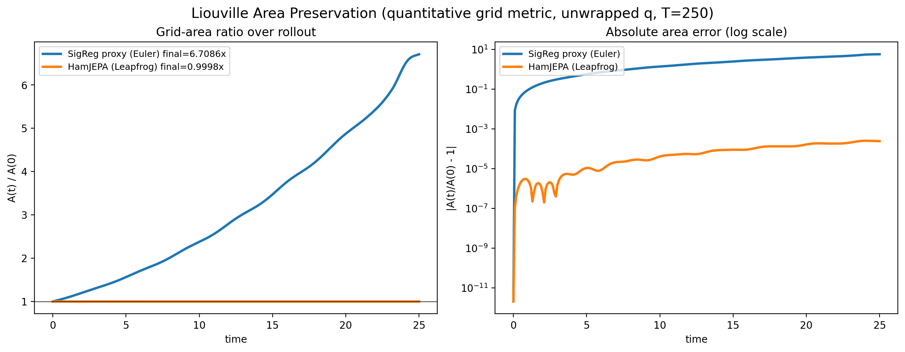
Blob deformation check
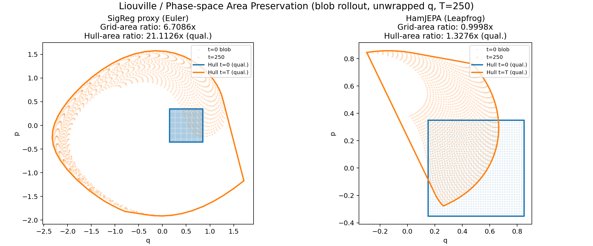
Symplecticity is tested directly through J(x)^T Ω J(x)=Ω and defect d(x)=||J^T ΩJ-Ω||_F. This is stricter than energy drift alone and isolates structural violations; diagnostics use unwrapped coordinates and float64 Jacobians.
Defect distribution
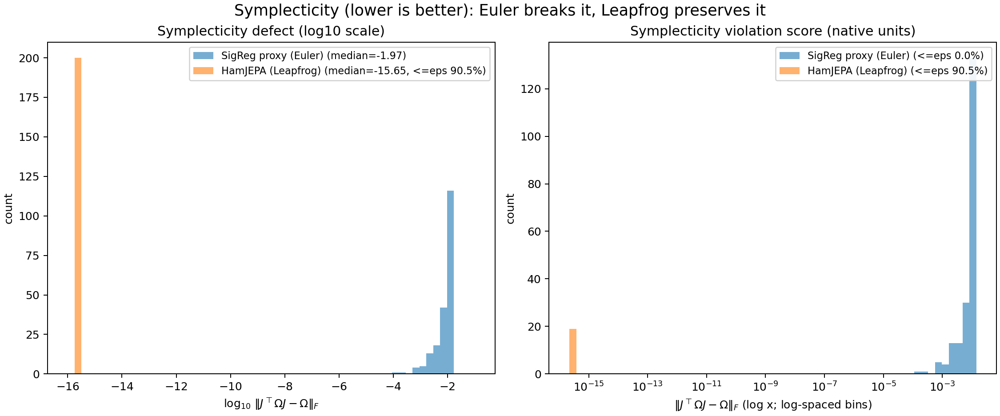
Energy error is summarized by median trajectory and IQR band, which is more robust than mean-only views under heavy-tail rollout paths. Symplectic rollout shows bounded oscillatory behavior; non-symplectic rollout shows monotone accumulation.
Median + IQR drift over time
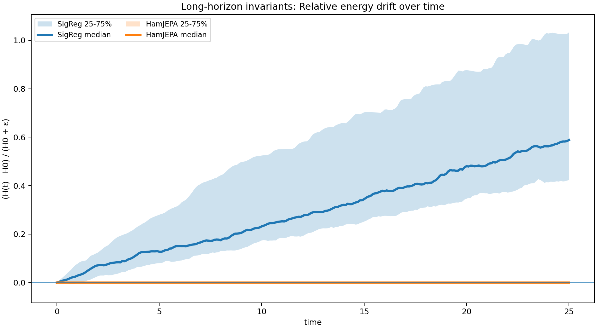
Ensemble diagnostics track tr(Cov), log det(Cov), and λ_min(Cov). These are not invariants of general nonlinear Hamiltonian flow, but they remain useful comparative indicators of rollout health and degeneration risk.
Ensemble covariance diagnostics
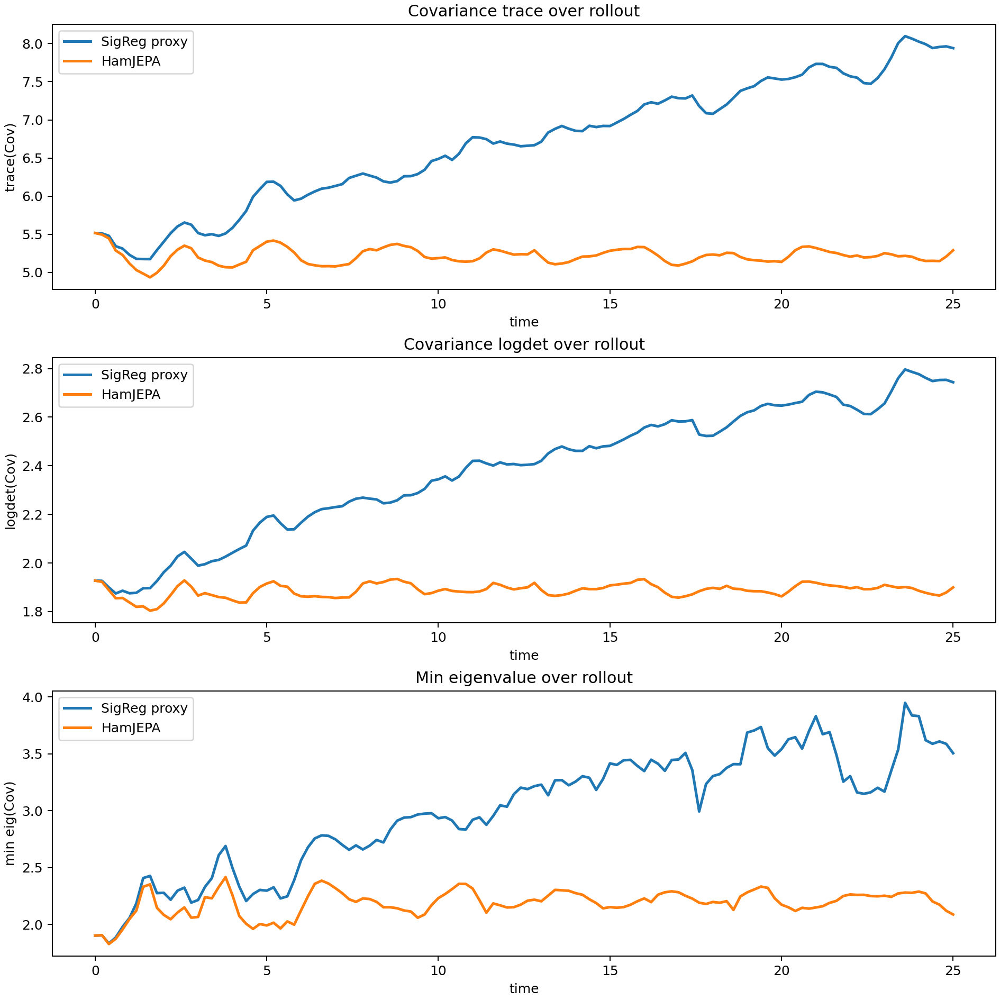
This LeJEPA paper-inspired sliced-projection diagnostic follows a Cramér-Wold viewpoint: instead of only aggregating distribution checks, compare many 1D projections to expose direction-dependent geometric distortion.
Projection cartoon
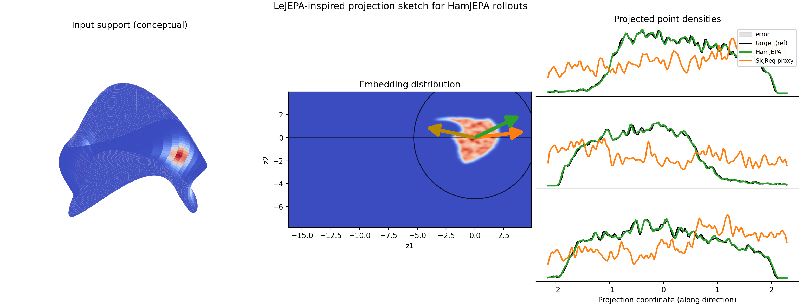
Projection sketch
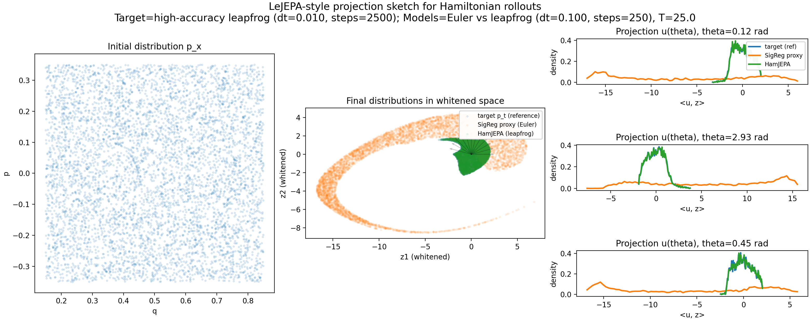
Directional discrepancy
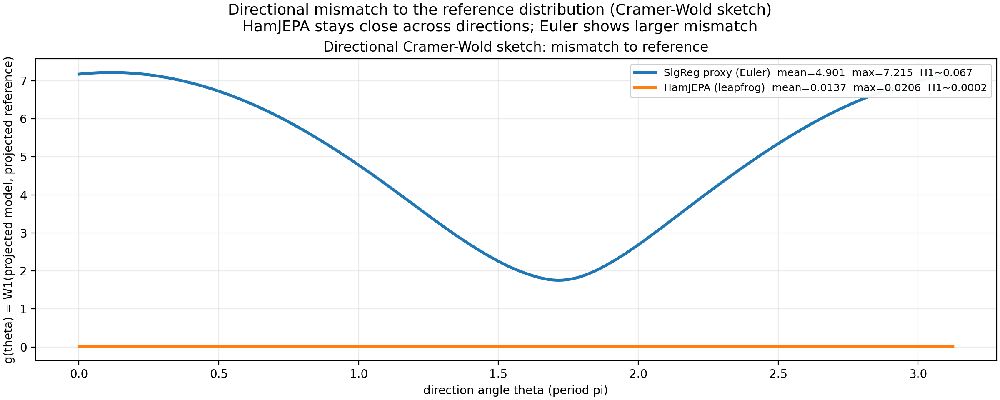